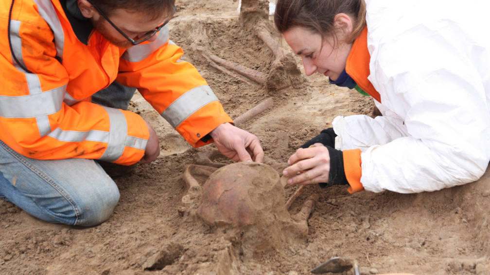
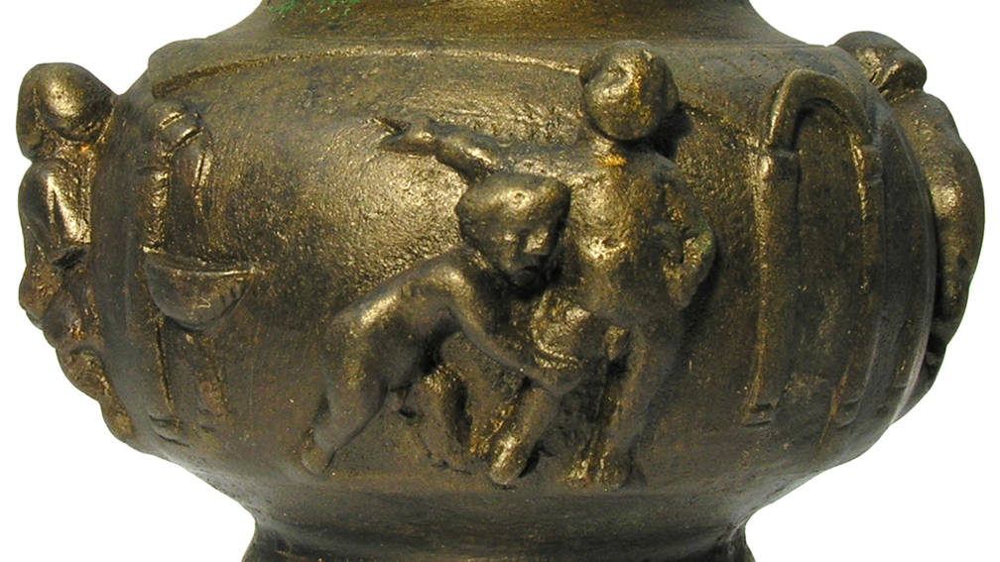
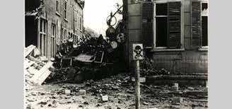
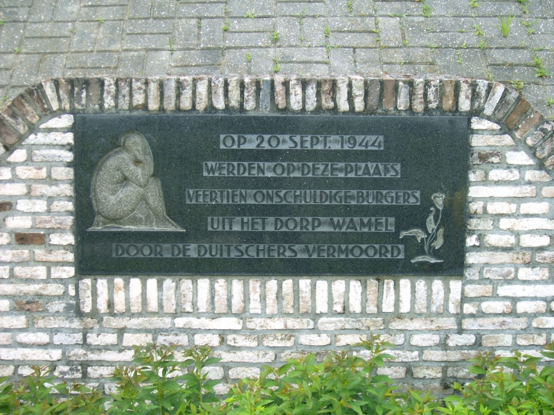

Tiel
Tiel is een stad en gemeente in de Nederlandse provincie Gelderland. De gemeente telde op 22 november 2024 ongeveer 42.370 inwoners en heeft een oppervlakte van 34,81 km² (waarvan 2,17 km² water).
Tiel ligt ingeklemd tussen de rivieren de Waal (in het zuiden), de Linge (in het noorden) en het Amsterdam-Rijnkanaal (in het oosten). De stad ligt aan de A15 en kan bereikt worden via de N834 en N835. Tiel fungeert als eindpunt van de spoorlijnen Utrecht – Tiel en Arnhem – Tiel.
Ten noordoosten van Tiel liggen de Prins Bernhardsluizen, het grote sluizencomplex tussen de rivier de Waal en het Amsterdam-Rijnkanaal, een belangrijke scheepvaartverbinding. Verder heeft Tiel een overnachtingshaven voor de binnenvaart. Een fiets- en voetveer verbindt Tiel met Wamel aan de overkant van de Waal. De mascotte van de stad is Flipje, het fruitbaasje (de stripfiguur van de voormalige lokale jamfabriek De Betuwe). Van Flipje staat een standbeeld in het stadscentrum.
Geschiedenis
Prehistorie en Oudheid
In 2011 werd ter hoogte van bedrijvenpark Kellen langs de Linge een vindplaats uit de nieuwe steentijd (circa 3650 v.Chr.) blootgelegd. De archeologen troffen bewoningssporen aan, aardewerk, vuursteen en dierlijk bot. In 2017 werden tijdens en uitbreiding van het bedrijventerrein Medel verschillende begraafplaatsen uit de nieuwe steentijd gevonden, waaronder een graf van ten minste acht personen.
In 2017 werd in Medel ook een van de rijkste Romeinse vindplaatsen in de Betuwe aangetroffen. Onder de 2.500 gevonden bronzen voorwerpen waren een zeldzame balsamarium (zalfpot) gedecoreerd met liefdesgoden in reliëf, en luxe artikelen zoals mantelspelden, ringen, dolken, een olielamp en een wijnzeef. De voorwerpen lagen op een klein gebied van twintig tot vijftig meter breed in een oude rivierbedding die langs de iets hoger gelegen "Hoge Hof" lag. Onderzoekers vermoedden dat daar een villa of een heiligdom heeft gestaan. In 2023, nadat alle opgravingen in kaart waren gebracht, concludeerden de onderzoekers dat er een 4000 jaar oud heiligdom met een zonnekalender moet hebben gestaan.


Middeleeuwen
Tiel is een van de oudste steden van Nederland. De plaats stamt uit de periode 850-1100, terwijl de meeste Nederlandse steden in de late middeleeuwen (1150-1300) ontstonden.
De teloorgang rond 850 van de circa tien kilometer verderop gelegen internationale handelsplaats Dorestad, zorgde ervoor dat een deel van de handel werd verlegd naar Tiel. In 896 ontving Tiel van de Frankische koning Zwentibold het tolrecht. Archeologisch onderzoek in de binnenstad heeft bevestigd wat uit schriftelijke bronnen reeds bekend was: de stad was in de tiende en elfde eeuw een handelsnederzetting van internationale betekenis, die nauwe banden onderhield met de veel rijkere en machtigere handelsstad Keulen. Tiel onderhield in die tijd ook nauwe handelsbetrekkingen met Engeland. Nog voor 950 werd in Tiel een stenen burcht opgericht, die onder andere als tolhuis diende.
Volgens de benedictijnse kroniekschrijver Alpertus van Metz werd Tiel geplunderd door Vikingen. Hij schreef dat zeerovers zonder enige tegenstand te ontmoeten in 1006 de handelsnederzetting binnentrokken, de levensvoorraden snel wegsleepten, waarna de nederzetting werd platgebrand Archeologisch bewijs voor de plunderingen ontbreekt.
Negentiende eeuw
In de tweede helft van de negentiende eeuw groeide Tiel uit tot een kleine industriestad. Met name de metaalnijverheid, galvaniseerbedrijven en fruitverwerking kwamen tot ontwikkeling. De stadsmuren werden gesloopt en de eerste stadsuitbreiding kwam op gang. Tussen de Waal bij Tiel en de Linge bij Wadenoijen werd in 1878 het Inundatiekanaal aangelegd, als onderdeel van de Nieuwe Hollandse Waterlinie. In 1882 werd Station Tiel geopend.
Tweede Wereldoorlog
In de Tweede Wereldoorlog werd Tiel zwaar getroffen tijdens gevechten tussen de Duitse bezetters die in de stad gelegerd waren en de geallieerden die gelegen waren aan de overzijde van de Waal. Onder meer de Sint-Maartenskerk en de Waterpoort werden door de beschietingen ernstig beschadigd. In de jaren na de oorlog is de binnenstad weer hersteld, maar nog steeds zijn er sporen te vinden van de bombardementen.


De slachtoffers worden herdacht met verschillende monumenten: de fusilladeplaats aan de coupure, het monument voor de gevallen krijger, het Joods monument, het monument op de Joodse begraafplaats, een plaquette voor N.A. Oostinga, het gedenkteken voor de gefusilleerden van 24 december 1944, het Indisch monument, het Moluks monument en 21 Stolpersteine.[11] In de buurtschap Zennewijnen staat het beeld De Roeier. Zie ook de lijst van oorlogsmonumenten in Tiel en de lijst van Stolpersteine in Tiel.